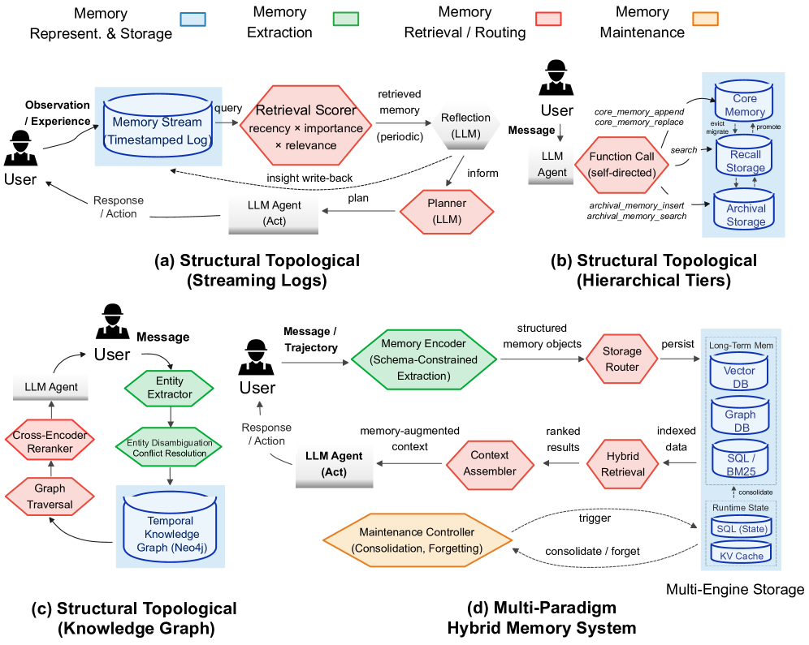
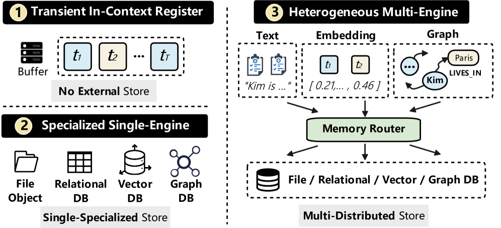
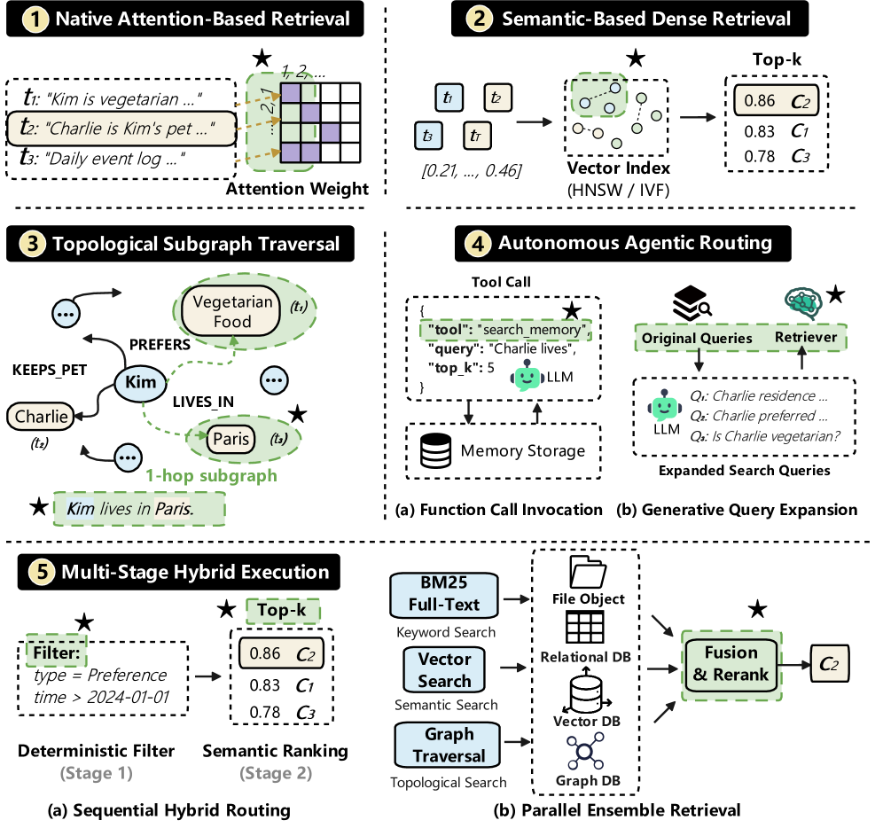
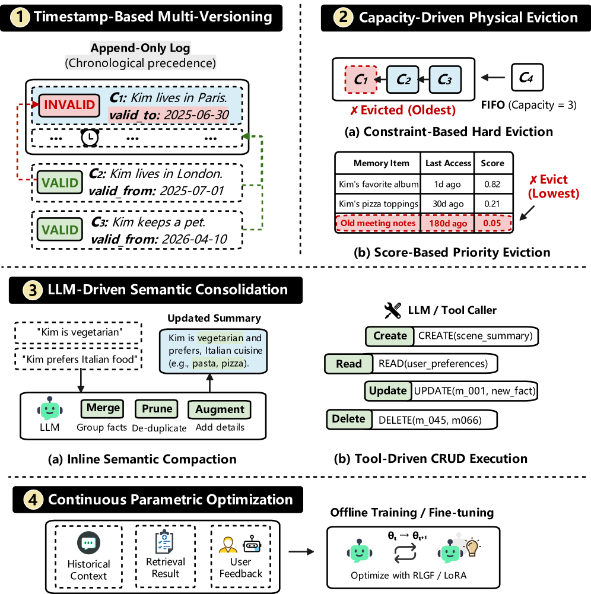
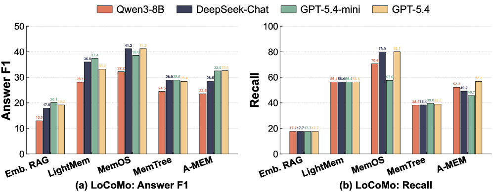

LLM agent 的内存已经从简单的检索增强，长成了一个支持持久存储、检索、更新、整合与动态生命周期治理的数据管理系统。但现有评测仍主要用端到端任务成功率（F1、BLEU）来打分，把底层的系统当成整块黑盒。
于是真正的系统级问题被掩盖了：操作成本有多少？各内存模块之间如何权衡？在动态知识更新下是否鲁棒？本文就从数据管理视角给出了一套系统化的实验研究——拆出四模块分析框架，横评 12 个代表性内存系统 + 2 个参考基线，跨 5 个 benchmark 工作负载、11 个数据集。
agent 内存本质是支撑长时程有状态执行与个性化交互的数据管理系统。既然它是系统，评测就该回答系统层问题：运行时花多少钱、不同内存策略牺牲什么换取什么、知识更新后还稳不稳。
只看 F1/BLEU 这类端到端分，等于把「存得对不对、取得到取不到、更新后会不会错乱、长时间会话会不会退化」都混在一起打一个总分——任何单架构的短板都被掩盖了。
这正是本文要补的：拆开内存系统逐模块评估，量化每个设计决策的代价与收益，而不是给整盒打个分。
现有 agent 内存系统覆盖了多样的架构设计。Stream-and-Reflection 式（如 MemoryBank）：把经验存成带时间戳的流，周期性总结出高层 reflection 写回流中，帮模型抽更高层的见解。

Hierarchical Tiered 式（如 MemGPT）：把内存按容量与访问特性分多级，core memory 与 archival storage 分离，通过显式操作（驱逐、提升）在层间移动。
Knowledge Graph 式（如 Mem0 的图版本、Zep）：用实体、关系、时序演化等结构化形式表示（时间知识图谱），常含实体消歧与冲突消解。
Composite Hybrid 式（如 A-MEM）：把 schema-aware 的内存对象跨多个存储底层路由，显式分离不同形态的数据。四种方案代表了「如何组织记忆」的不同哲学。
内存表示与存储（M1）：选什么形态表示记忆（原始流、向量、图、结构化对象），以及存到哪里、用什么索引——决定信息保真度与访问效率的底子。

内存提取（M2）：从会话/经验中挑出值得记住的信息——提取太多噪声、漏掉关键上下文都会伤害后续检索。

内存检索与路由（M3）：在需要时取回相关记忆，并决定把查询路由到哪一层/哪个存储，直接决定检索精度与延迟。

内存维护（M4）：更新、整合、淘汰、冲突解决与生命周期治理——决定长时间运行下内存是否稳定、是否随时间腐烂。

在 12 个系统 + 2 基线上跑全套端到端，最直接的一个发现是：没有单一架构在所有场景占优。
有效性高度依赖内存结构是否与工作负载的瓶颈对齐——查询密集、时序敏感、知识频繁更新的负载，对内存模块的侧重完全不同。

这也回答了题目：我们其实还没到可以无脑选定一个「agent 原生内存」的程度，选型必须先搞清楚自己的工作负载瓶颈在哪一环。

真实 agent 的记忆是不断变化的：事实被更新、知识被修正。鲁棒性评测考察内存系统在这些动态更新下的表现，包括长上下文下的鲁棒性、会话历史增长、以及时态证据距离漂移（temporal evidence-distance drift）。
结果显示不同系统对更新的处理差异显著——一些系统在知识更新后能正确改写冲突记忆，另一些则把过时信息继续当成新鲜信号返回。

long-horizon 稳定性同样是关键：长时间会话里内存会不会退化、累积的维护成本能不能兜住，决定了 agent 能否真正支撑数小时乃至数天的连续任务。
评测还揭示了现实的成本-性能权衡：在真实工作负载下，局部维护（localized maintenance）比全局重组（global reorganization）更省成本。
全局重组每次要重新审视并整理整个记忆库（例如定期全库反思、重整），代价高昂；而只针对有变化的局部做增量维护，能以更低成本取得相近甚至更好的效果。

这个发现对生产实践有直接意义：与其频繁做高开销的全库重构，不如设计细粒度的增量维护机制，把昂贵的全库操作降到最低频次。
除了端到端，论文还用消融实验逐模块量化各自的贡献：表示保真度、检索精度、更新正确性、长时程稳定性四个维度上一一剥离对照。
例如 LLM 骨干消融（Figure 9）考察当 backbone 更换时各系统表现是否稳定；维护策略消融（Figure 12）验证局部维护相对全局维护的收益。表示、提取、检索路由各自的机制消融，为工程选型提供了每块零件能带来多少收益的量化依据。

这正是「从黑盒到系统化」的价值——你不再只知道系统 A 总分比 B 高，而是知道该为 A 的哪个模块买单、B 输在哪里。

这个横评告诉我们：「agent 原生内存」还没有一个普适答案，但评测方法本身该先进化——把内存当系统来测，分模块量化代价与收益，而不是打一个黑盒总分。
对构建者，两句话起点：① 先识别你工作负载的瓶颈在哪个环节，再选对齐的内存结构；② 成本敏感就用增量局部维护，别让全局重组吃掉收益。论文代码已开源（github.com/OpenDataBox/MemoryData）。
参考：https://arxiv.org/html/2606.24775v1